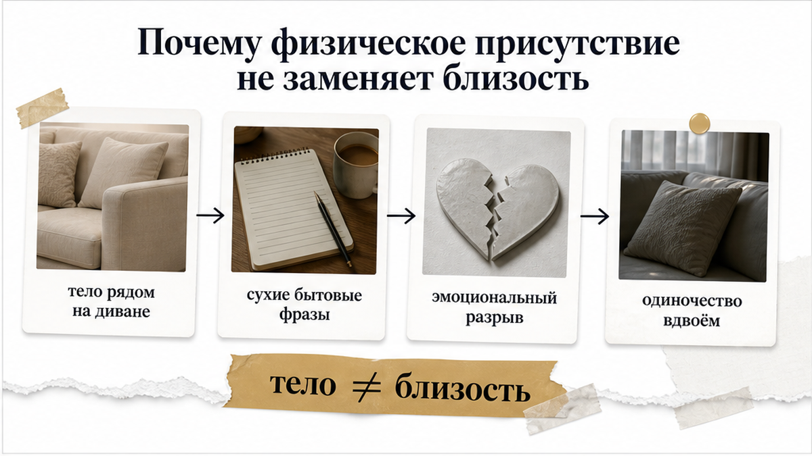
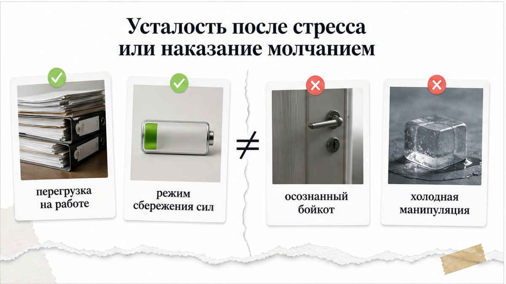
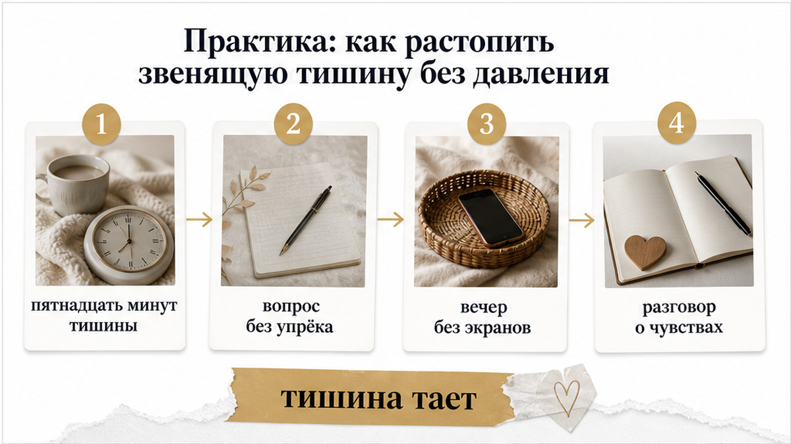

Вы сидите на одном диване в полуметре друг от друга, ужинаете за общим столом или ложитесь спать в одну постель, но между вами стоит глухая стена. Он листает ленту в смартфоне, смотрит в угол экрана телевизора, односложно отвечает на бытовые вопросы, а настоящего разговора не было уже несколько дней. Физически человек рядом, его можно коснуться рукой, но внутри растёт сосущее ощущение ледяной дистанции. Тишина рядом с близким человеком ранит сильнее, чем одиночество в пустой квартире: кажется, будто ты невидимка в собственном доме.
Когда мужчина закрывается в себе, попытки вытрясти из него слова через упрёки только делают стену толще. Прежде чем устраивать допрос или накручивать худшие сценарии, стоит понять скрытую причину этой тишины. Карты не залезают в чужие мысли, но они точно показывают расстановку сил и динамику пары:
Если неопределённость давит прямо сейчас, открой 3 бесплатных расклада в боте и разложи триплет или крест на ситуацию. Если молчание длится неделями и нужно увидеть скрытый сценарий целиком, разбери динамику через приложение ВКонтакте или в приложении Макс с полным аудиоразбором связок.

Многие пары попадают в незаметную ловушку: быт отлажен, оба каждый вечер дома, но эмоциональный контакт выключен. По данным Института Готтмана, от 20 до 60 процентов людей в долгих отношениях переживают глубокое одиночество внутри пары. Диалоги сводятся к сухой логистике: кто купит хлеб, во сколько забрать ребёнка, что приготовить на ужин. При этом о том, что происходит на душе, не говорят месяцами.
Нейробиология объясняет эту боль без мистики: эмоциональный разрыв с человеком, который сидит в метре от тебя, активирует в мозге те же зоны, что и физическая травма. Наша нервная система считывает партнёра как ключевую точку безопасности. Когда тело здесь, а отклика на твои шаги нет, мозг сигналит об угрозе и отвержении, даже если формального повода для ссоры не было.
Часто корень проблемы кроется в разном понимании контакта. Мужчине кажется, что он уже проявляет заботу и внимание самим фактом своего присутствия: он дома, не сбежал с друзьями, не устраивает скандалов. Женщине же для чувства безопасности и тепла необходим живой обмен, взгляд в глаза и эмоциональный отклик.
Когда этот отклик не приходит день за днём, внутри копится напряжение. Попытки исправить ситуацию через доказательства («посмотри, мы же вообще не разговариваем!») запускают оборонительную реакцию. Мужчина слышит в этом не просьбу о близости, а обвинение в том, что он плохой партнёр. Возникает тупиковая петля: чем сильнее ты давишь от тревоги, тем глубже он уходит в глухую оборону. Главным врагом становится сама эта петля, а не характер человека.

Чтобы не делать поспешных выводов, важно разделять два принципиально разных состояния: истощение ресурса и осознанный бойкот (висхолдинг).
Когда человек перегружен стрессом на работе или тяжёлым днём, он замолкает на кухне не для того, чтобы задеть тебя. Он механически жуёт, смотрит в одну точку и кивает, потому что его нервная система перешла в режим энергосбережения. В бытовых мелочах он остаётся доброжелательным, не пытается заставить тебя чувствовать вину и постепенно оттаивает, когда восстанавливает силы.
Висхолдинг как инструмент психологического давления выглядит иначе. Человек демонстративно захлопывает дверь в общение, может игнорировать тебя днями или неделями, при этом легко и весело болтая с коллегами по телефону. Цель такого молчания — наказать, заставить извиняться и поставить в зависимую позицию. Если же в твоей комнате обычная усталость и защитный панцирь, ситуацию можно аккуратно разморозить без скандалов.

Семейная терапия предлагает несколько простых и точных шагов, которые помогают вернуть тепло, не унижаясь и не устраивая допросов:
Когда неопределённость изматывает и ты не понимаешь, что на самом деле происходит за закрытой дверью его молчания, карты помогают трезво оценить расстановку сил:
Неизвестность и бесконечные догадки отнимают куда больше сил, чем ясное понимание реальности. Расставь точки над «i» и верни себе спокойствие: сделай экспресс-расклад на 3 карты в боте Макс — это бесплатно и займёт ровно две минуты. Если нужно увидеть скрытые механизмы и сценарий отношений целиком, открой расклад «Суть – Тень – Вектор» в приложении ВКонтакте или в приложении Макс с подробным аудиоразбором связок. Для пользователей сайта также работает Telegram-бот.
Для многих мужчин нахождение в одном пространстве уже ощущается как близость и покой, тогда как женщине необходим словесный контакт. Разница в способах восстановления сил часто выглядит как отчуждение, хотя прямой угрозы отношениям может не быть.
Сделай шаг назад и временно прекрати попытки вывести его на душевный разговор. Раздражение чаще всего вспыхивает из-за ощущения контроля. Дай пространству остыть и вернись к контакту позже через мягкое описание своих чувств.
Расклады подсвечивают эмоциональный фон, скрытые страхи, уровень усталости и баланс сил в паре, помогая отличить временное выгорание от осознанного охлаждения чувств.